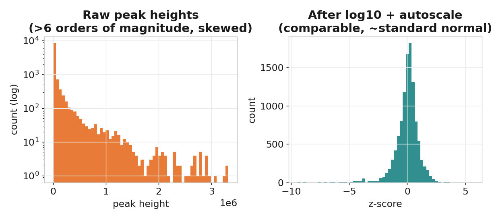
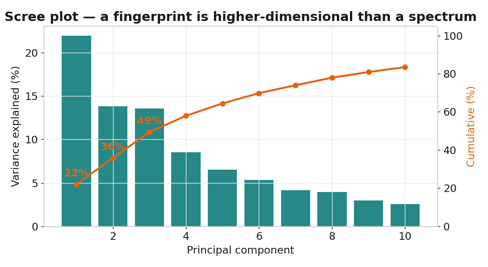
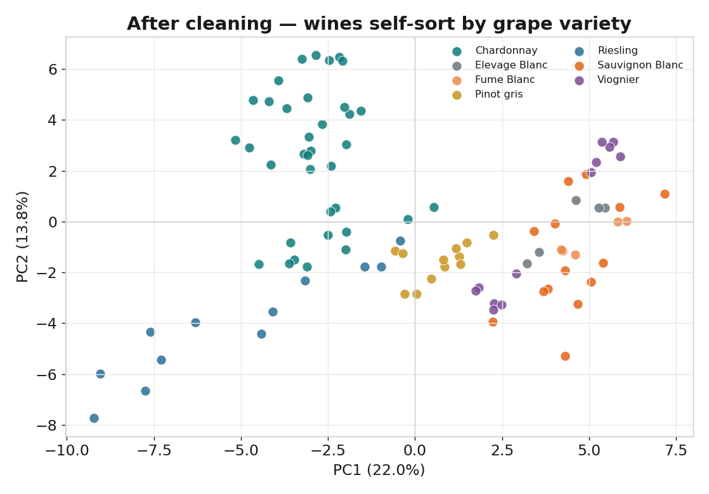
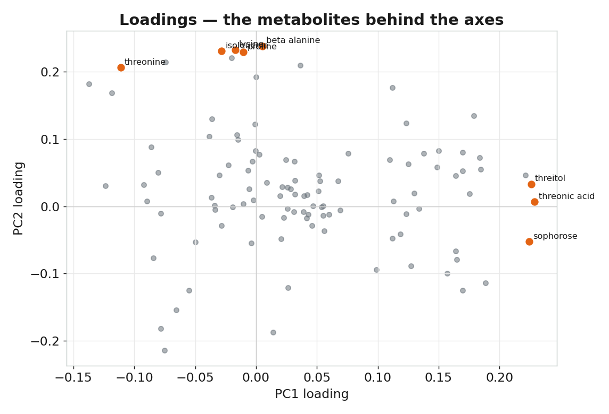

01 / 14
主成分分析 PCA
看見白酒質譜裡的代謝指紋
質譜食品分析 · 第一部
02 / 14 — 質譜變資料
質譜怎麼變成資料
酒樣本一支待測的酒
→
GC-MS氣相層析質譜分析
→
資料矩陣樣本 × 代謝物
每一列是一支樣本，每一欄是一種代謝物的含量
03 / 14 — 難題
108 維的難題

04 / 14 — 前處理

log + autoscale
峰高跨了 5 個數量級，大訊號淹沒小訊號。
先取 對數 壓縮範圍，再 autoscale 讓每種代謝物公平貢獻。
05 / 14 — 直覺
PCA 的直覺：找最分散的方向
PC1 沿最大分散方向；PC2 與它垂直、抓第二多的變異
06 / 14 — 拆解
分數與負荷量
X ≈ T · P⊤ 分數 × 負荷量
分數 T＝每支酒在新軸上的位置（看樣本）
負荷量 P＝每種代謝物如何組成新方向（看變數）
負荷量 P＝每種代謝物如何組成新方向（看變數）
07 / 14 — 維度
要留幾個主成分？

08 / 14 — 異常
分數圖：先抓異常

09 / 14 — 核心
清理後：品種自己浮現

10 / 14 — 化學

負荷量回連化學
離原點越遠的代謝物，影響越大。
糖、有機酸、胺基酸——與品種、釀造有關的成分，把酒推往不同方向。
11 / 14 — 定位
PCA 是 / 不是
非監督
只看指紋，不需要任何標籤
擅長
探索、分群、找異常
不做
不直接鑑別品種（那要 PLS-DA）
12 / 14 — 收束
知識地圖
指紋 → 前處理 → PCA → 分數 / 負荷量 / 陡坡 / 異常
13 / 14 — 金句
PCA
把上百種代謝物
壓縮成看得懂的方向
14 / 14 — 完
下一支：PLS-DA
用質譜指紋「鑑別」葡萄品種
質譜食品分析 · PCA · 完